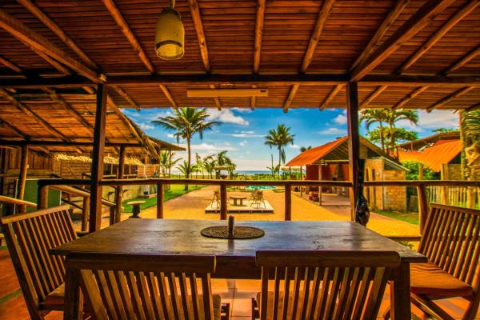

|  | ||
|
Our cusine is originally from Manta, Manabi, Ecuador. Our dishes are know for having all the seasoning from Manta and the other cities within Manabi. The capital of Manabi Its capital is Portoviejo, but its economic centre is the city of Manta – a bustling port and metropolis. The economy of the province consists mostly of organic products such as cacao, banana, tobacco, seafood and special handicrafts |
The rich waters of the Pacific Ocean and nutrient-filled tropical soils have made Ecuador famous for its wide variety of fruits, vegetables, fish and sea food. The inhabitants of Manabi have learned to make the most of what’s available to them and transformed these into some unbelievably flavourful dishes. |
Manaba cooks have a special way of making everything taste good. Ask for the famous ceviche mixto (mixed seafood), crab legs al ajillo (with garlic), corviche (mashed green plantain filled with fish and peanut sauce), viche (soup made of fish, yam, peanuts, and ripe plantain), tonga (chicken stew with rice and peanut sauce in a plantain leaf) |